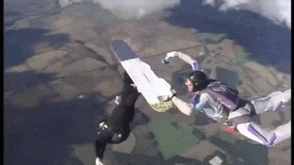

Types of sports
Unusual sports

These types of sports are special and not many do these sports. But they still can be challenging, sometimes even more than usual sports.
For example:
- Extreme Ironing (shown in the picture)
- Toe wrestling
- Underwater hockey
- Cycleball
- E-Sports and so on..
They can be done in simple places, but sometimes even in extreme places like in the air or underwater.
Extreme sports

These sports also are done by many people, because they are very hard to execute. These are also very risky, you could die very easily.
For example:
- Cliff climbing (shown in the picture)
- Mountain hiking
- Mountainbiking
- Skydiving and so on...
They are done in odd and dangerous places and can only be performed by experts which are experienced.
Normal sports

These sports are done by many people, so they are easy to execute. Many of them exist for many years, so a lot of championchips or competitions for these sports are invented.
For example:
- Basketball (shown in the picture)
- Football
- Tennis
- Skiing
- Handball and so on...
They are often done in sport halls or stadiums and even outdoors.